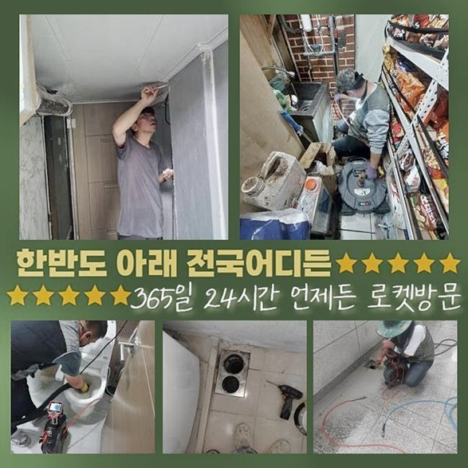
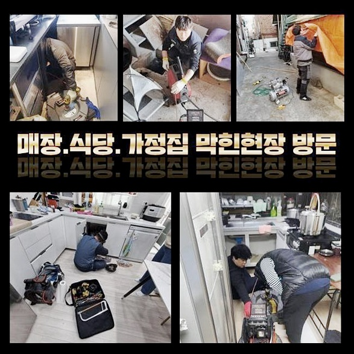
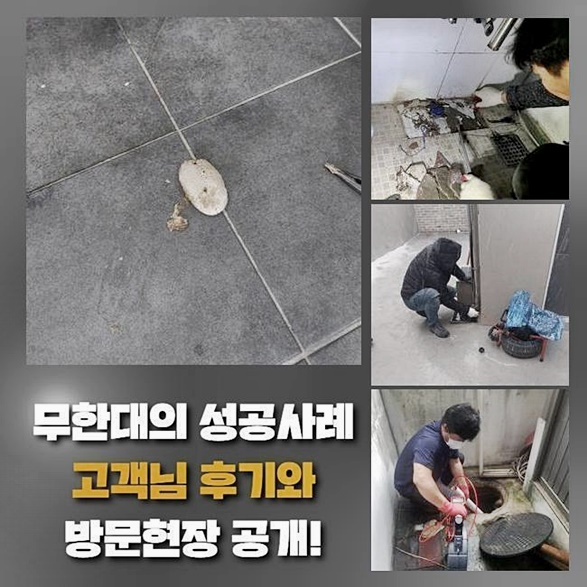
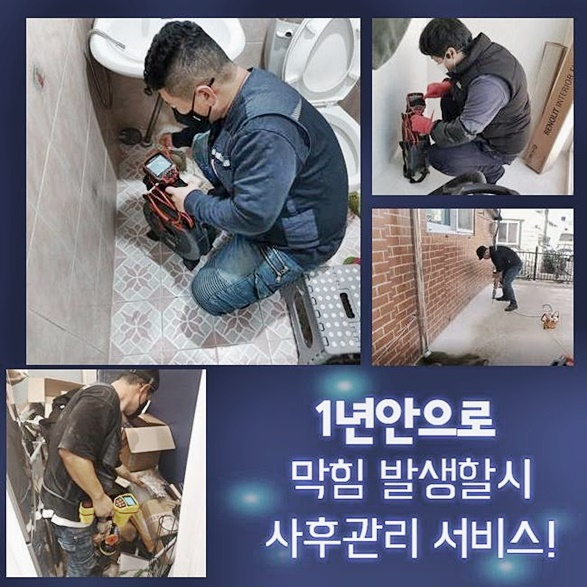
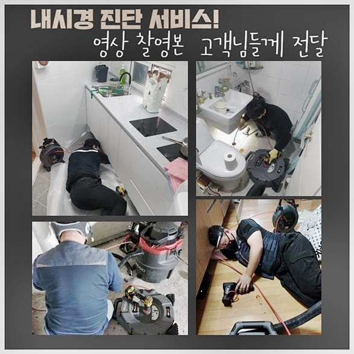
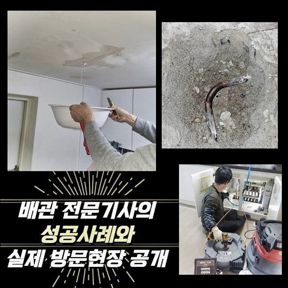
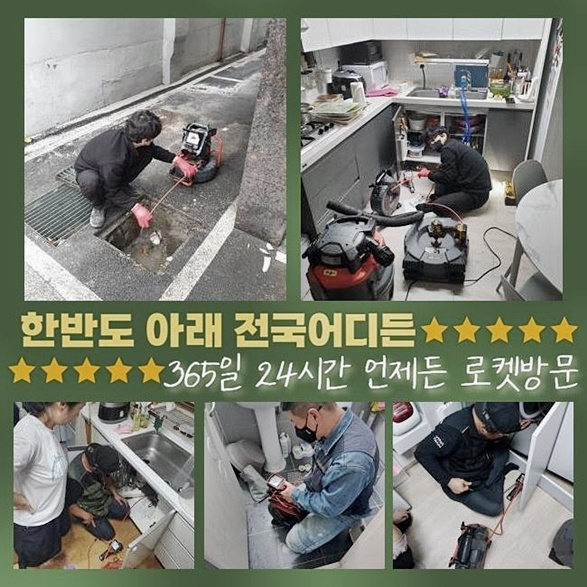

🏠 양주 고읍동화장실역류 덕계동 하수구청소 출장설비
용인시 처인구 배관막힘 전문 시공 후기

📋 작업 개요
- 위치: 용인시 처인구, 수원시 영통구, 화성시 동탄
- 서비스 유형: 배관막힘, 하수구청소, 고압세척
- 작업 일시:
- 업체명: 하수구수사대 (010-5615-2118)
🔍 문제 상황
양주 고읍동화장실역류 덕계동 하수구청소 출장설비
정상적으로 구동되는 것이 제기능을 발휘하지 못하는 순간 공백으로 인한 어려움들이 속속들이 찾아올 수 있어요
물에 관련된 설비시설을 활용하지 못하는 순간에는 정상적인 일상은 포기해야 합니다
시공을 문의받고 빠르게 찾았던 현장에서도 심각한 고민을 안고 계셨어요
고객님은 하수구에서 올라오는 악취 문제가 제일 심하다고 하셨는데 쓰고 난 물도 시원스럽게 배출되지 않기도 하지만 더불어 생긴 악취는 감당이 안된다고 어떻게든 손써달라고 하셨어요
보이지 않는 깊은 하수구의 문제는 빠르게 수습하지 않는다면 대공사가 들어가야할 상황들까지 생성할 수 있습니다
오늘의 현장처럼 느릿하게 물의 폐수속도가 느려진다면 사용방법의 미숙으로 인한 문제라고 판단할 수 있어요
잔수가 가득 고여있고 흐릿하게 오염됐다면 싱크볼에 누적된 물과 오염원을 소거시켜야 내부 상황을 살필 수 있습니다
이제껏 물의 사용이 고통받으셨을 것이고 이 모습을 보면 막막하셨을 것이니 고장 전처럼 원만하게 생활하실 수 있도록 해결책을 찾아드려야 했어요
막힘은 언제든 발생하니 새벽을 틈 타 발현될 때는 언제든지 출동갈 준비를 해야하며 언제라도 듬직하게 지원해드려야 합니다
특히 이번에 찾은 곳은 냄새가 끔찍하게 풍겨다는 정도로 보였기에 신속한 처리를 들어가서 보완해드리고자 했습니다
하수를 배출시켜 보았는데 꿈쩍도 하지 않고 물이 폐수되지 않은데다 범람 현상까지 드러난 실태였네요
지난 업체들도 야심차게 확인했다가 쉬운 조건은 아니었던 탓에 회피하고 돌아갔어서 돌고 돌아 저희측에게 의뢰를 해주신 부분이었죠

🔎 원인 분석
💡 전문가 진단: 정밀 진단 장비를 사용하여 슬러지의 고착 여부를 판명하고 타격/세척 작업을 실시했습니다.
다행스럽게도 저희의 절차가 예리하게 문제를 꼬집어 내어 해결하기 힘들 듯한 사안을 유연하게 이겨낼 수 있었던 것이죠
말 없이 진행하지도 않으며 세세하게 진단 내역을 알리고 제대로 세척을 해줬다며 대만족이라고 평가하셨어요
거기다 착한 가격대에 보수까지 책임지는 것도 긍정적인 부분이라고 언급을 해주셨습니다
관로에 누적된 이물질을 자세히 진단하여 속도도 빠르고 효과가 좋은 대책을 발견해 낼 수 있었어요
습식 청소기나 스케일링 장비를 쓰면서 작업을 이어가면 고객분들이 힘들어 하시는 막힘 문제는 나아집니다
진공으로 빨아당기는 석션기로 말끔히 청소해주는 이유는 재발 방지를 위해서도 긍정적입니다
소량이라고 가벼이 여길 수 있지만 결국에는 결합되어 커질 위기를 맞이할 수 있기 때문이죠!
재발 시 시간과 비용의 낭비는 당연하고 고객님이 받는 스트레스도 재현될 수 있으므로 단번에 해결봐야 합니다
하수관 속에 기름질이나 오염원인이 층을 이뤄가면 쓰고 난 하수가 버려지는 길목이 차단되어 버려서 더러운 물이 부패되어 냄새가 납니다
이처럼 끔찍한 사태를 겪고싶지 않은 분들이라면 적절한 기간마다 하수구를 눈여겨 보면서 점검받아야 해요
관로를 관측하는 전용 장치를 작동시킨 뒤 문제가 발생한 현황을 관찰할 수 있어요
슬러지가 누적돼있는 경우는 바람직한 사용법을 이어가지 않은 불찰로 쌓여버리게 됩니다
이만하면 넘어갈거라 기대하여 음식쓰레기의 일부를 물에 씻어서 흘려보내면 막힘을 유발하는 것입니다

🔧 작업 과정
곧바로 증세가 나타나지 않아도 침전물은 깊숙히 침투하여 딱딱하게 성질이 변하여 처치곤란으로 전락합니다
이미 오염된 배관을 보수하기 위해서는 긁어내는 강한 샤프트를 쓰면 확실한 개선을 꿈꿀 수 있어요
헤드에 장착된 노커로 오랜시간 누적되다가 경화된 이물질들을 갈아줄 수 있기 때문이죠
해당 장비의 말단이 곡선 쉐이프라서 내부에 고여있는 물질들을 용이하게 부수고 끌어올리게 됩니다
샤프트를 활용한 스케일링 단계로 남김 없이 처리해서 투명한 하수가 이동하도록 회복시키는거죠
보기힘든 배수로의 어떤 쪽이 데미지를 입었는지 고객님께 현상을 계속 알려줘서 작업 과정을 아시게끔 했습니다
싱크대 아래의 주름관을 떼고 석션을 통해서 정화작업을 거쳤는데 그다지 상황이 나아지진 않았죠
하수관을 완전히 청소하고 보니 잔뜩 고여있던 하수가 일시에 운반되는 게 보였습니다
겉으로 보이는 찌꺼기들을 약간만 없앤다고 아예 막힘이 끝을 맺진 않으니 딥 클리닝이 필요합니다
뚫는 과정에서 여러가지 문제점들이 발견될 때가 많으니 유연한 대처능력이 있어야 해요
특화된 다수의 장치들과 기술력을 디딤돌 삼아 막힘을 초래한 물질들을 소거시켜 갔습니다
배관 속을 치워주려면 진공 석션기를 비롯한 여러가지 청소 도구로 파이프를 깔끔하게 변화시킵니다
사실상 이물질이 끼인 측면들은 일부분에 불과하지만 새것처럼 설비를 되돌리려면 고압수로 씻어내리는 게 효과가 있습니다
석션기기를 가동시켜서 관로 내의 이물질들을 약간씩 없애나가고 마지막에는 고압 세척방식으로 깨끗한 배관 환경을 선사할 수 있습니다
요약하자면 작업의 초반부에 카메라로 확인해 봤더니 다수의 이물질이 많이 적재되어 있던 사태라 여기에 가로막혀서 계속 물이 누적되는 모습임을 알아차리게 됐어요
간단한 조치만 써서는 무용지물일 것 같았기에 절대적으로 쾌적하게 만드는 게 유일한 방책이라고 보였어요
카메라를 주입시켜서 내부를 탐사하는 공정과 뚫어나가는 과정은 파이프에 대한 이해도와 기술력이 뒷받침되어야 합니다
통로의 폐쇄가 다발적으로 탄생할 수 있는 문제이니 모두 조치를 하지 못하면 통수되는 기능이 완전하게 제공될 수가 없습니다!
정상적인 수도 공급이 안된다는 점은 건물의 종류가 어떻든간에 불리한 상황을 생성할 수 있으니 얼른 수습할 수록 이롭습니다
하수구에서 나는 냄새는 식사나 가벼운 활동에도 인상을 찌푸려지는 경험을 주니 얼른 손을 써야 합니다


✅ 작업 완료
실내 배수 시스템에서 보통 발견되는 오염원을 보자면 부패한 음식물 쓰레기나 끈적한 기름 슬러지가 많은데요
제때 제거되지 못한다면 발효되면서 가스가 방출돼서 후각을 괴롭히는데다 균의 번식도 이뤄집니다
하수배관이 오염된다면 가구원의 건강과 삶의 질을 해롭게 변화시킬 수 있는 문제이니 내팽겨치고 미루기만 한다면 치명상을 입을 수도 있습니다
뜻밖의 설비의 고장을 경험하시게 되었다면 믿을 수 있는 전문가를 찾으셔서 잘못된 곳을 짚어내고 모든 오류를 수습하는 편이 현명한 처사입니다
연식이 오래된 하수구라면 적합한 세기를 잘 알고있는 실력 좋은 곳을 찾아야 하자가 없습니다!
아무리 저렴해도 계획 없이 뚫어보려는 곳은 물이 새는 등의 하자가 도래할 수 있으니 현명하게 결정하셨으면 합니다




⚠️ 하수구 배관 막힘 예방 및 관리 가이드
- ✅ 머리카락, 비닐, 물티슈 등 물에 분해되지 않는 이물질은 절대 흘려보내지 마세요.
- ✅ 기름기 많은 식기는 설거지 전 키친타올로 먼저 기름때를 닦아내세요.
- ✅ 주기적으로 배수구에 뜨거운 물을 가득 부어주어 유지방 고착을 방지하세요.
- ✅ 작업 후 1년 이내 재발 시 무상 A/S 보증 서비스를 제공합니다.
💡 핵심 정리
- 확실한 장비 작업(내시경 점검 및 샤프트 스케일링)으로 원인을 뿌리 뽑습니다.
- 작업 후 1년 이내에 동일한 부위 재발 시 100% 무상 A/S 서비스를 보장합니다.
- 서울 · 경기 · 인천 전 지역에 24시간 언제든 긴급 출동할 수 있도록 항시 대기 중입니다.
❓ 자주 묻는 질문 (FAQ)
🚨 용인시 처인구 배관막힘 문제로 고민이신가요?
정확한 원인 진단과 확실한 시공으로 재발 없는 해결을 약속드립니다.
24시간 긴급 출동 | 서울 · 경기 · 인천 전지역 | 1년 내 재발 시 무상 A/S